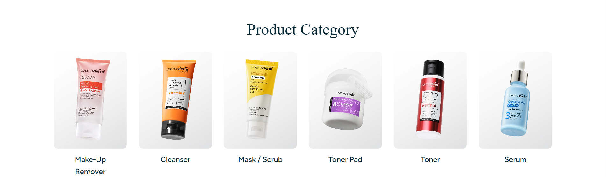

Cosmoderm Product Category
Too Many Product Choices
With 116 products across multiple categories and collections, a large selection gives customers more choices — but it also makes the decision-making process harder, especially for those new to skincare. A customer may know they have oily or acne-prone skin without knowing which specific product suits them, leading to more time spent comparing than deciding.
Lack of Personalised Product Guidance
Skincare needs differ from person to person, but the current catalogue is organised mainly by category and collection. This helps browsing, but doesn't guide customers who are unsure where to start toward the products most relevant to them.
Difficulty Understanding Skincare Ingredients
Ingredients like niacinamide, salicylic acid, hyaluronic acid, retinol and vitamin C are common on packaging, but not every consumer knows what they actually do. Seeing an ingredient name doesn't always clarify whether a product matches a specific skin concern.
Difficulty Building a Complete Skincare Routine
Finding one suitable product doesn't mean a customer knows what else belongs in their routine. A beginner may not know whether to use a cleanser, toner, serum, moisturiser and sunscreen — or in what order to apply them.
Product Discovery Can Be More Interactive
The website currently offers categories, collections, best sellers and new arrivals — useful for browsing, but still passive. Customers are left to explore the catalogue themselves rather than being guided by their actual skin concerns and preferences.